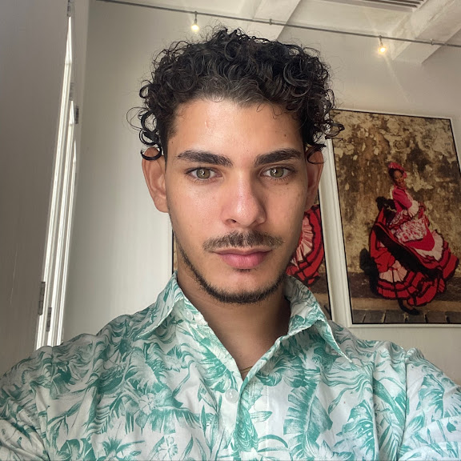
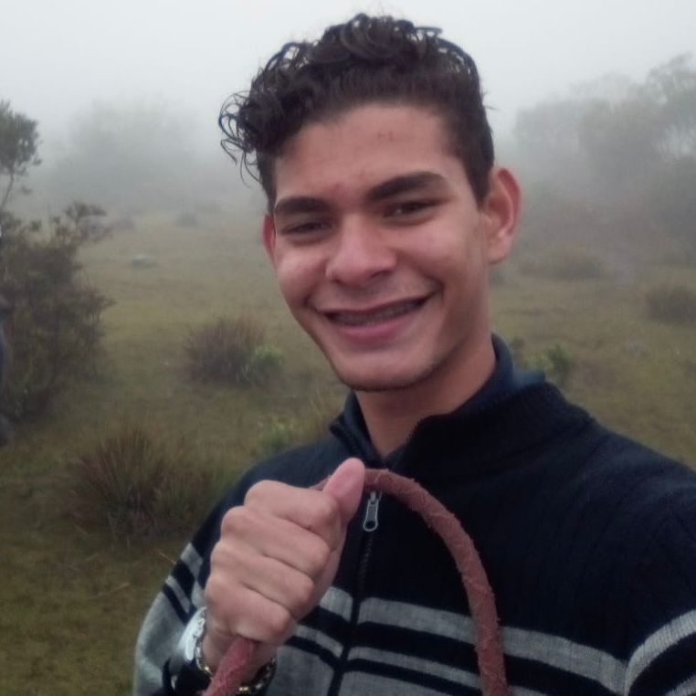
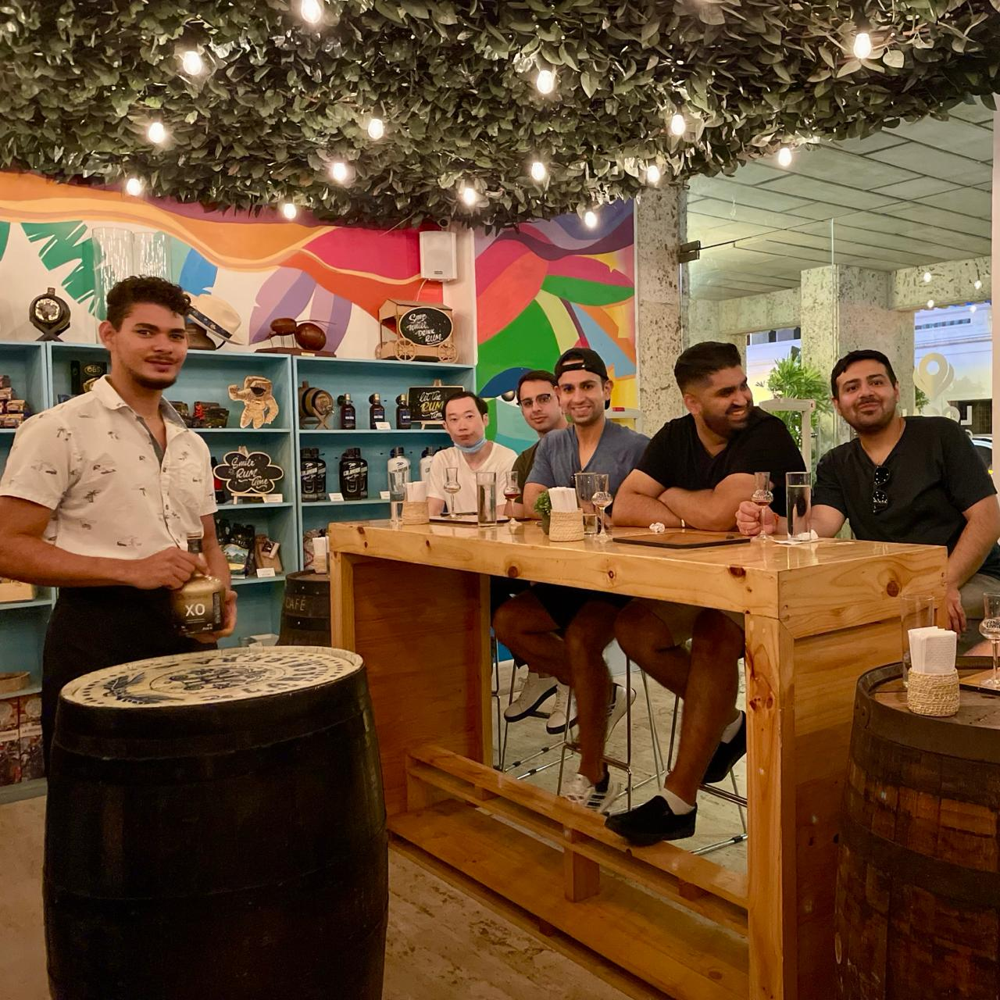

Elias Muñozbolt
¡Gracias por visitar mi web! Voy a contarte un poco mas sobre mi.
Hola compañeros! He realizado este proyecto con la intencion de que puedan saber un poco mas de mi, mis actividades diarias y hobbies.
Mi origen
Hace 23 años naci en Valera, Venezuela. Por la crisis y situacion actual del pais mis papas habian decidido volver a Colombia; su pais de origen y asi poder brindarme mejores oportunidades, sin embargo, yo seguia vivinedo solo en Venezuela hasta que me mude de manera permanente a Cartagena en el 2018.
Mi experiencia laboral
Es lo que me ha traido hasta aca despues de haber desempeñado labores en varios empleos en el sector de atencion al cliente me he dado cuenta que a pesar que me gusta compartir con la gente y ser amable con los clinetes no todo el tiempo estan contentos o satisfechos y si bien mi servicio puede ser bueno si el producto que ofrece la empresa donde trabajo no lo es, la insatisfaccion simepre premiara.
Mi objetivo con esta nueva etapada de estudio es:
Desarrollar habilidades que me permitan desenvolverme al nivel de un profesional en el area.
Para lograrlo debo:
- Seguir atento a las clases para asi entender el contenido.
- Practicar en tiempo libre.
- Seguir las recomendaciones.
- Cumplir con mis desafios.
- Cumplir con los proyectos a evaluar.
- Aprobar el curso.
Mis hobbies
- Ir al gym
- Esquí acuatico y kayak.
- Varia
- Segun disponibilidad de mi tiempo libre.
| Lunes | Martes | Miercoles | Juves | Viernes |
|---|---|---|---|---|
| Pecho y triceps | Cuadriceps y pantorillas | Espalda y biceps | Femorales, gluteos y aductores | Rutina complementaria |

Frecuencia: 2 veces al mes.
El siguiente mapa muestra la ubicacion donde practico estos deportes